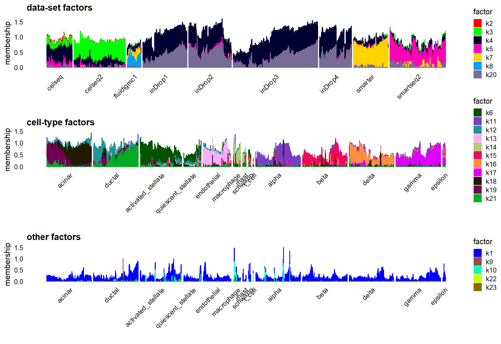
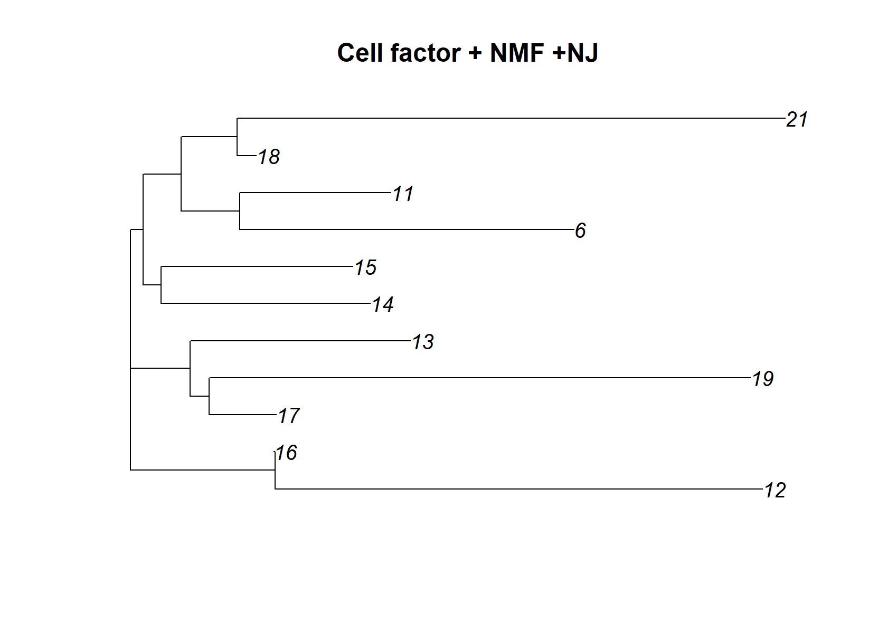
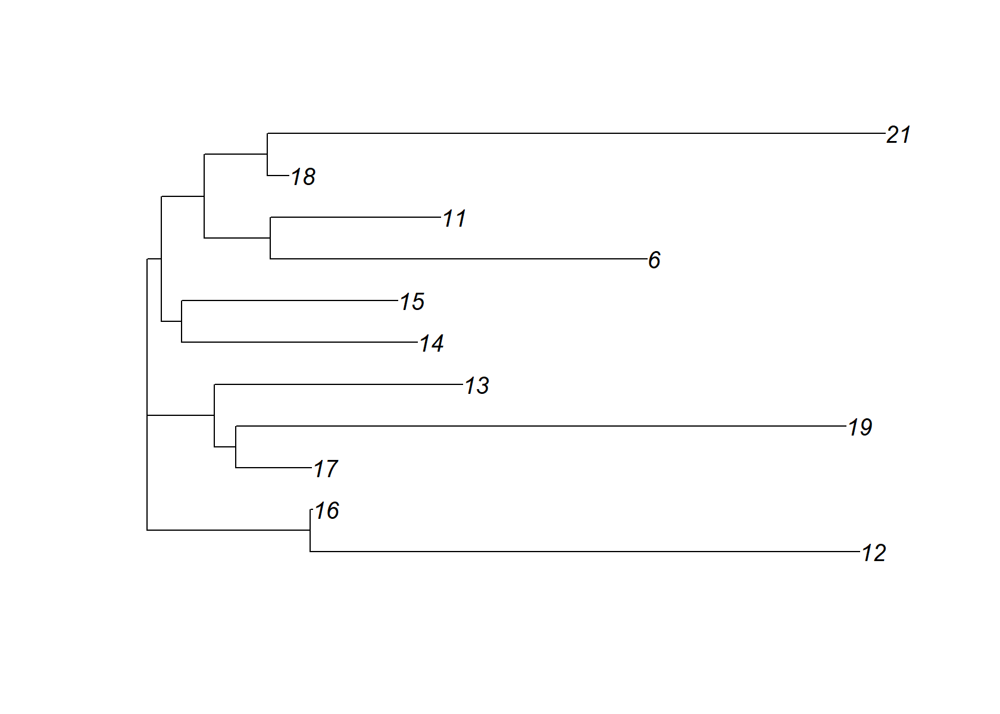
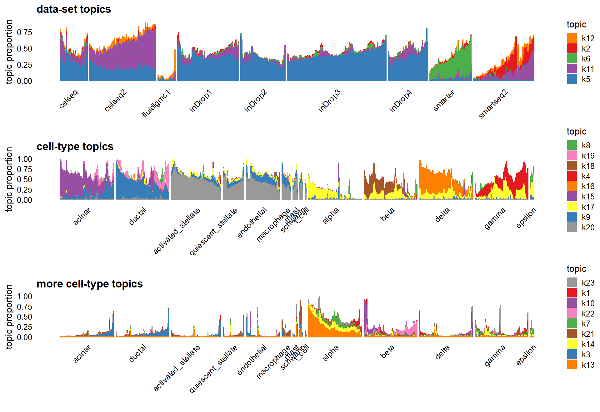
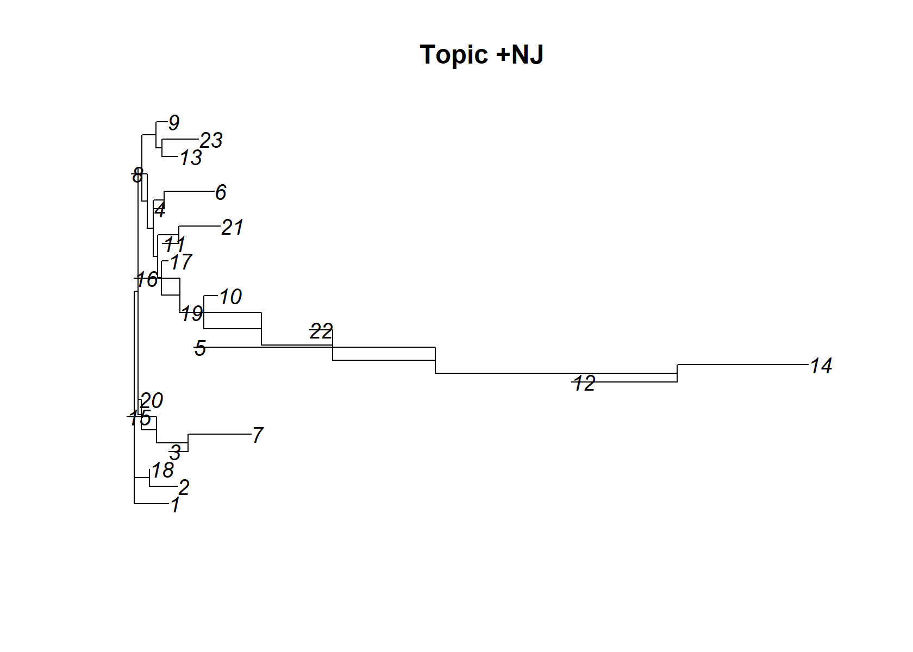
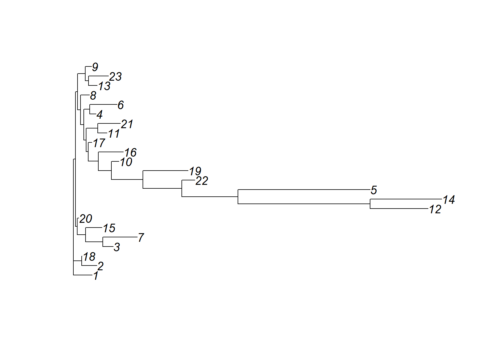
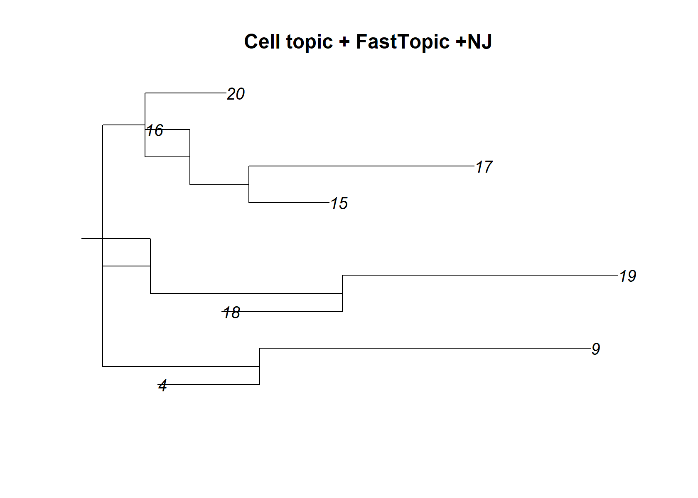
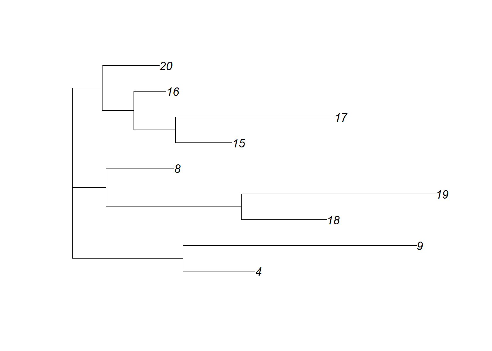

Exploring Neighbor joining in factorization
William Denault
Last updated: 2024-12-16
Checks: 7 0
Knit directory:
single-cell-jamboree/analysis/
This reproducible R Markdown analysis was created with workflowr (version 1.7.1). The Checks tab describes the reproducibility checks that were applied when the results were created. The Past versions tab lists the development history.
Great! Since the R Markdown file has been committed to the Git repository, you know the exact version of the code that produced these results.
Great job! The global environment was empty. Objects defined in the global environment can affect the analysis in your R Markdown file in unknown ways. For reproduciblity it’s best to always run the code in an empty environment.
The command set.seed(1) was run prior to running the
code in the R Markdown file. Setting a seed ensures that any results
that rely on randomness, e.g. subsampling or permutations, are
reproducible.
Great job! Recording the operating system, R version, and package versions is critical for reproducibility.
Nice! There were no cached chunks for this analysis, so you can be confident that you successfully produced the results during this run.
Great job! Using relative paths to the files within your workflowr project makes it easier to run your code on other machines.
Great! You are using Git for version control. Tracking code development and connecting the code version to the results is critical for reproducibility.
The results in this page were generated with repository version 1101c80. See the Past versions tab to see a history of the changes made to the R Markdown and HTML files.
Note that you need to be careful to ensure that all relevant files for
the analysis have been committed to Git prior to generating the results
(you can use wflow_publish or
wflow_git_commit). workflowr only checks the R Markdown
file, but you know if there are other scripts or data files that it
depends on. Below is the status of the Git repository when the results
were generated:
Ignored files:
Ignored: .Rhistory
Ignored: .Rproj.user/
Note that any generated files, e.g. HTML, png, CSS, etc., are not included in this status report because it is ok for generated content to have uncommitted changes.
These are the previous versions of the repository in which changes were
made to the R Markdown (analysis/Neighbor_joining.Rmd) and
HTML (docs/Neighbor_joining.html) files. If you’ve
configured a remote Git repository (see ?wflow_git_remote),
click on the hyperlinks in the table below to view the files as they
were in that past version.
| File | Version | Author | Date | Message |
|---|---|---|---|---|
| html | 3ece72d | WD | 2024-12-12 | Build site. |
| html | 40ca4d0 | WD | 2024-12-12 | adding NJ exploeration |
| Rmd | de003c4 | WD | 2024-12-12 | wflow_publish("analysis/Neighbor_joining.Rmd") |
This goal of this analysis is to apply Neighbor joining to different matrix factorization approaches to the pancreas data set and assess how well it works for this data set.
First, load the packages needed for this analysis.
library(Matrix)
library(fastTopics)
# Warning: package 'fastTopics' was built under R version 4.4.2
library(ggplot2)
library(cowplot)
library(ape)
# Warning: package 'ape' was built under R version 4.4.2Set the seed for reproducibility.
set.seed(1)This is a function I will use below to subsample the cell types that have a lot of cells so that the rare cell types are more visible in the Structure plots.
subsample_cell_types <- function (x, n = 1000) {
cells <- NULL
groups <- levels(x)
for (g in groups) {
i <- which(x == g)
n0 <- min(n,length(i))
i <- sample(i,n0)
cells <- c(cells,i)
}
return(sort(cells))
}Load the pancreas data set and the outputs generated from running the
compute_pancreas_factors.R and
compute_pancreas_factors2.R scripts.
load("../data/pancreas.RData")
load("../output/pancreas_factors.RData")
timings0 <- timings
load("../output/pancreas_factors2.RData")
timings <- c(timings0,timings)flashier NMF
Reproduction of Peter resulst
cells <- subsample_cell_types(sample_info$celltype,n = 500)
L <- fl_nmf_ldf$L
k <- ncol(L)
colnames(L) <- paste0("k",1:k)
batch_factors <- c(2:5,7:8,20)
celltype_factors <- c(6,11:19,21)
other_factors <- c(1,9:10,22:23)
celltype <- sample_info$celltype
celltype <-
factor(celltype,
c("acinar","ductal","activated_stellate","quiescent_stellate",
"endothelial","macrophage","mast","schwann","t_cell","alpha",
"beta","delta","gamma","epsilon"))
p1 <- structure_plot(L,topics = batch_factors,grouping = sample_info$tech,
gap = 10,perplexity = 70) +
labs(y = "membership",title = "data-set factors",
fill = "factor",color = "factor")
p2 <- structure_plot(L[cells,],topics = celltype_factors,
grouping = celltype[cells],gap = 25,
n = Inf,perplexity = 70) +
labs(y = "membership",title = "cell-type factors",
fill = "factor",color = "factor")
p3 <- structure_plot(L[cells,],topics = other_factors,
grouping = celltype[cells],gap = 25,
n = Inf,perplexity = 70) +
labs(y = "membership",title = "other factors",
fill = "factor",color = "factor")
plot_grid(p1,p2,p3,nrow = 3,ncol = 1)
| Version | Author | Date |
|---|---|---|
| 3ece72d | WD | 2024-12-12 |
Let’s start by applying NJ to all the factor together. It generates a couple of negative edge length that we correct
dist_mat= t(fl_nmf_ldf$F)%*%fl_nmf_ldf$F
dimnames(dist_mat)= list(1:ncol(dist_mat), 1:ncol(dist_mat))
check_tree=nj(dist_mat )
plot(check_tree, main="NMF +NJ")
| Version | Author | Date |
|---|---|---|
| 3ece72d | WD | 2024-12-12 |
check_tree$edge.length=abs(check_tree$edge.length)
plot(check_tree)
| Version | Author | Date |
|---|---|---|
| 3ece72d | WD | 2024-12-12 |
Lets now focus just on the so called celltype_factors and apply NJ
celltype_factors <-c(6,11:19,21)
check_tree=nj(dist_mat[celltype_factors, celltype_factors] )
plot(check_tree, main="Cell factor + NMF +NJ")
| Version | Author | Date |
|---|---|---|
| 3ece72d | WD | 2024-12-12 |
check_tree$edge.length=abs(check_tree$edge.length)
check_tree
plot(check_tree)
| Version | Author | Date |
|---|---|---|
| 3ece72d | WD | 2024-12-12 |
#
# Phylogenetic tree with 11 tips and 9 internal nodes.
#
# Tip labels:
# 6, 11, 12, 13, 14, 15, ...
#
# Unrooted; includes branch lengths.In this case there are no negative edge
Note that factors that are close on the tree tend not to appear together in the “factor plot” above (eg. 11 and 6 or 14 and 15)
In other words if a cell is loaded in one of the branch it tends not to be loaded in a branch within its vicinity.
Topic model (fastTopics)
Peter script
L <- poisson2multinom(pnmf)$L
batch_topics <- c(2,5,6,11,12)
celltype_topics <- c(4,9,8,15,16,17,18,19,20)
celltype_topics2 <- c(1,3,7,10,13,14,21,22,23)
p1 <- structure_plot(L[,batch_topics],grouping = sample_info[,"tech"],
gap = 10,perplexity = 70) +
ggtitle("data-set topics")
p2 <- structure_plot(L[cells,celltype_topics],grouping = celltype[cells],
gap = 25,perplexity = 70,n = Inf) +
ggtitle("cell-type topics")
p3 <- structure_plot(L[cells,celltype_topics2],grouping = celltype[cells],
gap = 25,perplexity = 70,n = Inf) +
ggtitle("more cell-type topics")
plot_grid(p1,p2,p3,nrow = 3,ncol = 1)
| Version | Author | Date |
|---|---|---|
| 3ece72d | WD | 2024-12-12 |
Same let’s run NJ on all the factor and then let’s focus of the cell topic
dist_mat= t(pnmf$F)%*% pnmf$F
dimnames(dist_mat)= list(1:ncol(dist_mat), 1:ncol(dist_mat))
check_tree=nj(dist_mat )
plot(check_tree, main="Topic +NJ")
| Version | Author | Date |
|---|---|---|
| 3ece72d | WD | 2024-12-12 |
check_tree$edge.length=abs(check_tree$edge.length)
check_tree
plot(check_tree)
| Version | Author | Date |
|---|---|---|
| 3ece72d | WD | 2024-12-12 |
#
# Phylogenetic tree with 23 tips and 21 internal nodes.
#
# Tip labels:
# 1, 2, 3, 4, 5, 6, ...
#
# Unrooted; includes branch lengths.Clearly the tree do not make sens. Let’s look at the celltopic only
check_tree=nj( dist_mat[celltype_topics, celltype_topics] )
plot(check_tree, main="Cell topic + FastTopic +NJ")
| Version | Author | Date |
|---|---|---|
| 3ece72d | WD | 2024-12-12 |
check_tree$edge.length=abs(check_tree$edge.length)
check_tree
plot(check_tree)
| Version | Author | Date |
|---|---|---|
| 3ece72d | WD | 2024-12-12 |
#
# Phylogenetic tree with 9 tips and 7 internal nodes.
#
# Tip labels:
# 4, 9, 8, 15, 16, 17, ...
#
# Unrooted; includes branch lengths.Unfortunately this tree still has some problem. However we notice the same pattern as before. What is close on the tree tend not to co-occur on the “factor plot” In other words if a cell is loaded in one of the branch it tend not to be loaded in a branch within its vicinity. (eg 4 and 9 or 18 and 19)
sessionInfo()
# R version 4.4.1 (2024-06-14 ucrt)
# Platform: x86_64-w64-mingw32/x64
# Running under: Windows 11 x64 (build 26100)
#
# Matrix products: default
#
#
# locale:
# [1] LC_COLLATE=English_United States.utf8
# [2] LC_CTYPE=English_United States.utf8
# [3] LC_MONETARY=English_United States.utf8
# [4] LC_NUMERIC=C
# [5] LC_TIME=English_United States.utf8
#
# time zone: Europe/Oslo
# tzcode source: internal
#
# attached base packages:
# [1] stats graphics grDevices utils datasets methods base
#
# other attached packages:
# [1] ape_5.8 cowplot_1.1.3 ggplot2_3.5.1 fastTopics_0.6-192
# [5] Matrix_1.7-0
#
# loaded via a namespace (and not attached):
# [1] gtable_0.3.6 xfun_0.49 bslib_0.8.0
# [4] htmlwidgets_1.6.4 ggrepel_0.9.6 lattice_0.22-6
# [7] quadprog_1.5-8 vctrs_0.6.5 tools_4.4.1
# [10] generics_0.1.3 parallel_4.4.1 tibble_3.2.1
# [13] fansi_1.0.6 pkgconfig_2.0.3 data.table_1.16.2
# [16] SQUAREM_2021.1 RcppParallel_5.1.9 lifecycle_1.0.4
# [19] truncnorm_1.0-9 farver_2.1.2 compiler_4.4.1
# [22] stringr_1.5.1 git2r_0.35.0 progress_1.2.3
# [25] munsell_0.5.1 RhpcBLASctl_0.23-42 httpuv_1.6.15
# [28] htmltools_0.5.8.1 sass_0.4.9 yaml_2.3.10
# [31] lazyeval_0.2.2 plotly_4.10.4 crayon_1.5.3
# [34] later_1.4.1 pillar_1.9.0 jquerylib_0.1.4
# [37] whisker_0.4.1 tidyr_1.3.1 uwot_0.2.2
# [40] cachem_1.1.0 nlme_3.1-164 gtools_3.9.5
# [43] tidyselect_1.2.1 digest_0.6.37 Rtsne_0.17
# [46] stringi_1.8.4 dplyr_1.1.4 purrr_1.0.2
# [49] ashr_2.2-63 labeling_0.4.3 rprojroot_2.0.4
# [52] fastmap_1.2.0 grid_4.4.1 colorspace_2.1-1
# [55] cli_3.6.3 invgamma_1.1 magrittr_2.0.3
# [58] utf8_1.2.4 withr_3.0.2 prettyunits_1.2.0
# [61] scales_1.3.0 promises_1.3.2 rmarkdown_2.29
# [64] httr_1.4.7 workflowr_1.7.1 hms_1.1.3
# [67] pbapply_1.7-2 evaluate_1.0.1 knitr_1.49
# [70] viridisLite_0.4.2 irlba_2.3.5.1 rlang_1.1.4
# [73] Rcpp_1.0.13 mixsqp_0.3-54 glue_1.7.0
# [76] rstudioapi_0.17.1 jsonlite_1.8.8 R6_2.5.1
# [79] fs_1.6.5